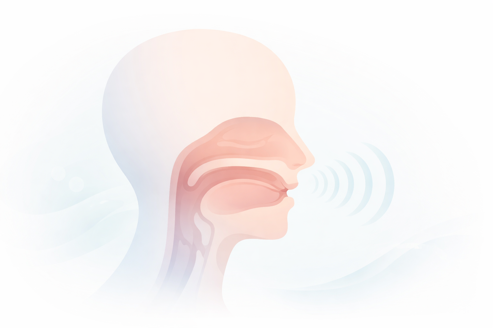

Fonética Articulatória no Português: O Que É, Como Funciona e Exemplos Práticos
A faculdade da linguagem humana repousa sobre uma extraordinária engrenagem biofísica: a capacidade de transformar a expiração pulmonar em ondas sonoras carregadas de significado. Longe de ser um processo puramente imaterial ou mental, a comunicação falada exige a orquestração neuromuscular instantânea de dezenas de músculos, estruturas cartilaginosas e cavidades de ressonância. A disciplina linguística que se dedica a desvendar a mecânica dessa produção é a Fonética Articulatória.
Enquanto a Fonologia investiga as regras abstratas e o valor distintivo dos fonemas no interior do sistema da língua, e a Fonética Acústica analisa a propagação das ondas sonoras no meio físico, a vertente articulatória concentra-se na descrição anatômica e fisiológica dos movimentos do aparelho fonador. Ela investiga a posição milimétrica da língua, a postura dos lábios, o estado de vibração das pregas vocais e a vedação ou abertura do véu palatino durante a enunciação.
Segundo Cagliari (2002) e Clark e Yallop (1995), a fala é o resultado direto da interação aerodinâmica entre o fluxo de ar expelido sob pressão e os múltiplos ajustes de constrição realizados no trato vocal. No âmbito da Língua Portuguesa, dominar esses mecanismos articulatórios é indispensável para descrever cientificamente o repertório de vogais e consoantes do português brasileiro (PB), fundamentar o trabalho fonoaudiológico de reabilitação da fala, aprimorar o ensino de pronúncia em línguas estrangeiras e viabilizar o desenvolvimento de tecnologias de síntese e reconhecimento de voz.
Neste artigo acadêmico, você explorará as três etapas biofísicas da produção vocal (iniciação, fonação e articulação), a matriz taxonômica completa de pontos e modos de articulação consonantal, a geometria do sistema vocálico tônico e átono, a distinção epistemológica definitiva entre Fonética e Fonologia, além de um roteiro analítico prático, exemplos comentados passo a passo, questões resolvidas de provas oficiais e sínteses teóricas.

O estatuto da Fonética Articulatória na Linguística
A Fonética Articulatória é o ramo mais antigo e consolidado das ciências fonéticas, cujas raízes remontam à gramática sânscrita de Pāṇini e aos tratados clássicos dos séculos XIX e XX. Seu princípio epistemológico reside no exame da substância material da expressão: o som da fala enquanto evento corpóreo, mecânico e mensurável.
Ao descrever um som, o foneticista articulatório busca responder com rigor: "Quais órgãos anatômicos foram mobilizados? Onde ocorreu a constrição? De que maneira o ar venceu o obstáculo? Houve vibração laríngea?". Essa abordagem universal aplica-se a qualquer idioma humano, fornecendo a base descritiva adotada internacionalmente pelo Alfabeto Fonético Internacional (AFI/IPA).
A materialidade fônica segundo Cagliari
“A fonética é o estudo dos sons da fala, considerando sua produção fisiológica, sua transmissão física e sua recepção perceptiva. Dentre esses ramos, a fonética articulatória ocupa posição fundante, pois revela como o falante manipula os órgãos do aparelho fonador para talhar a matéria aérea bruta nas formas sonoras da linguagem” (CAGLIARI, 2002, p. 19; CRYSTAL, 2008).
Como funciona a produção fisiológica dos sons da fala?
A emissão de qualquer enunciado sonoro envolve a sincronização harmoniosa de três etapas biofísicas sequenciais:
As Três Etapas da Produção Vocal
- Iniciação (Pressão Aerodinâmica): ação coordenada dos pulmões, da musculatura intercostal e do diafragma, que compelem a coluna aérea expiratória contínua (mecanismo pulmonar egressivo);
- Fonação (Atividade Laríngea): modulação primária do fluxo aéreo na laringe pela passagem através da glote, onde as pregas vocais vibram ativamente (sons sonoros/vozeados) ou permanecem abertas (sons surdos/desvozeados);
- Articulação e Ressonância (Moldagem Supraglótica): transformação do som cru nas cavidades da faringe, boca e nariz, onde articuladores ativos (língua, lábios, véu palatino) e passivos (dentes, alvéolos, palato duro) definem a qualidade acústica final do fone.
Classificação articulatória das consoantes no português
Ao contrário das vogais, os segmentos consonantais caracterizam-se pela presença de algum tipo de barreira, bloqueio ou estreitamento causador de atrito na cavidade oral. A taxonomia consonantal articula-se obrigatoriamente a partir de três eixos simultâneos:
1. Ponto de Articulação (A localização anatômica da barreira)
Indica a região exata do trato vocal onde o articulador móvel entra em contato ou se aproxima de uma superfície fixa:
- Bilabial: aproximação e fechamento recíproco entre o lábio superior e o lábio inferior (ex.: /p/, /b/, /m/ em pato, bola, mala);
- Labiodental: contato firme entre as bordas dos dentes incisivos superiores e a face interna do lábio inferior (ex.: /f/, /v/ em faca, vida);
- Alveolar (e Dentoalveolar): o ápice ou a lâmina da língua apoia-se contra a face interna dos dentes superiores ou nos alvéolos dentários (ex.: /t/, /d/, /s/, /z/, /n/, /l/, /ɾ/ em teto, dado, sino, zero, nuvem, lata, caro);
- Pós-Alveolar: a lâmina da língua projeta-se na região óssea imediatamente posterior à crista alveolar (ex.: /ʃ/, /ʒ/ e os alófones africados [tʃ], [dʒ] em chuva, jogo, tia, dia);
- Palatal: o dorso médio da língua eleva-se contra a abóbada do palato duro (céu da boca) (ex.: /ɲ/, /ʎ/ em ninho, milho);
- Velar: a parte posterior da língua (dorso velar) oclui-se contra o véu palatino ou palato mole (ex.: /k/, /g/ em casa, gato);
- Glotal: a constrição ocorre no interior da laringe, na própria fenda glótica (ex.: as realizações aspiradas [h] e [ɦ] do r em carro ou rua).
2. Modo de Articulação (A dinâmica aerodinâmica de escape)
Descreve como a coluna aérea vence ou contorna o obstáculo imposto pelos órgãos articuladores:
- Oclusivas: fechamento total e momentâneo do trato vocal, seguido de soltura rápida em uma pequena explosão audível (ex.: /p/, /b/, /t/, /d/, /k/, /g/);
- Fricativas: estreitamento do canal sem fechamento total, forçando o ar a escapar por uma fenda milimétrica com ruído turbulento contínuo (ex.: /f/, /v/, /s/, /z/, /ʃ/, /ʒ/, [h]);
- Africadas: articulações compostas que se iniciam com oclusão hermética e encerram-se com descompressão fricativa na mesma área anatômica (ex.: [tʃ] e [dʒ] em tíquete, cidade no PB);
- Nasais: fechamento completo na boca, mas com o véu palatino abaixado, canalizando todo o fluxo sonoro e de ar pelas fossas nasais (ex.: /m/, /n/, /ɲ/);
- Laterais: oclusão lingual na linha central da cavidade bucal, forçando o ar a escoar livremente pelas bordas laterais rebaixadas da língua (ex.: /l/, /ʎ/);
- Vibrantes: produzidas pela oscilação mecânica rápida de um articulador elástico (a ponta da língua nos alvéolos), manifestando-se como tepe simples (/ɾ/ em caro) ou múltipla (/ʁ/ em carro);
- Aproximantes: aproximação suave dos articuladores sem pressão turbulenta perceptível, situando-se no limite entre vogal e consoante (ex.: as semivogais [j] e [w]).
3. Sonoridade e Vozeamento Laríngeo
Diz respeito ao estado das pregas vocais na laringe:
Consoantes Sonoras (Vozeadas)
As pregas vocais encontram-se aduzidas (aproximadas), entrando em vibração cíclica acelerada com a passagem do fluxo pulmonar.
Exemplos: /b/, /d/, /g/, /v/, /z/, /ʒ/, /m/, /n/, /ɲ/, /l/, /ʎ/, /ɾ/, /ʁ/.
Consoantes Surdas (Desvozeadas)
As pregas vocais permanecem abduzidas (afastadas e relaxadas), permitindo a passagem livre do ar pela laringe sem vibração mecânica.
Exemplos: /p/, /t/, /k/, /f/, /s/, /ʃ/, [h].
Matriz articulatória das consoantes do PB
A tabela a seguir consolida a matriz completa das 19 consoantes fonológicas do português brasileiro, articulando ponto, modo e sonoridade:
| Modo de Articulação | Bilabial | Labiodental | Alveolar | Pós-Alveolar | Palatal | Velar | Glotal |
|---|---|---|---|---|---|---|---|
| Oclusiva Surda | /p/ | — | /t/ | — | — | /k/ | — |
| Oclusiva Sonora | /b/ | — | /d/ | — | — | /g/ | — |
| Fricativa Surda | — | /f/ | /s/ | /ʃ/ | — | — | [h] |
| Fricativa Sonora | — | /v/ | /z/ | /ʒ/ | — | — | [ɦ] |
| Nasal Sonora | /m/ | — | /n/ | — | /ɲ/ | — | — |
| Lateral Sonora | — | — | /l/ | — | /ʎ/ | — | — |
| Vibrante Sonora | — | — | /ɾ/ | — | — | /ʁ/ | — |
A articulação das vogais no português brasileiro
Diferentemente das consoantes, as vogais são produzidas sem constrições oclusivas ou atritos no trato vocal, comportando-se como ondas de livre ressonância bucal. A classificação articulatória das vogais do português brasileiro estrutura-se em quatro eixos anatômicos universais:
- Altura da língua (Abertura da boca): altas ou fechadas (/i/, /u/), médias-fechadas (/e/, /o/), médias-abertas (/ɛ/, /ɔ/) e baixa ou aberta (/a/);
- Posição horizontal da língua: anteriores ou palatais (/i/, /e/, /ɛ/), central (/a/) e posteriores ou velares (/u/, /o/, /ɔ/);
- Arredondamento dos lábios: não arredondadas (todas as anteriores e a central) e arredondadas (todas as posteriores: /u/, /o/, /ɔ/);
- Rota do fluxo aéreo (Nasalidade): orais (véu palatino elevado contra a faringe) e nasais (véu palatino rebaixado: /ĩ, ẽ, ɐ̃, õ, ũ/).
A simetria do sistema vocálico tônico
“O sistema vocálico do português brasileiro organiza-se em um triângulo ou quadrilátero de perfeito equilíbrio simétrico na posição tônica, onde pares de altura distinguem termos fundamentais da língua, como avô (/o/) e avó (/ɔ/) ou sede (/e/) e sede (/ɛ/)” (CÂMARA JR., 1970, p. 41; CALLOU; LEITE, 2009).
Fonética Articulatória vs. Fonologia: distinção estrutural
A clássica oposição entre Fonética e Fonologia, inspirada nas formulações seminais de Ferdinand de Saussure (2006) sobre a distinção entre a substância e a forma da linguagem, delimita as fronteiras disciplinares:
| Critério Teórico | Fonética Articulatória | Fonologia |
|---|---|---|
| Objeto de Estudo | O fone: produção física, material e fisiológica dos sons. | O fonema: função distintiva e abstrata no sistema da língua. |
| Foco de Análise | Movimentos musculares, pontos de contato e pressões aéreas. | Pares mínimos, oposições distintivas e regras de distribuição. |
| Natureza dos Dados | Empírica, biológica, acústica e universal. | Estrutural, mental, social e particular a cada idioma. |
| Notação Técnica | Registrado obrigatoriamente entre colchetes [ ]. | Registrado obrigatoriamente entre barras inclinadas / /. |
A língua como sistema de valores (Ferdinand de Saussure)
Como adverte Saussure (2006), a língua não é uma substância material, mas uma forma constituída por valores e diferenças puras. O que importa para a Fonologia não é a espessura física do som [t], mas o fato de que ele se opõe a [d] para distinguir teto de dedo. Por outro lado, para a Fonética Articulatória, a espessura milimétrica do contato lingual nos alvéolos é o próprio cerne da investigação científica.
Roteiro metodológico: como realizar a descrição articulatória de um fone
Para graduandos, fonoaudiólogos e professores que realizam descrição fonética, a caracterização de qualquer som falado exige seguir uma ordem taxonômica padronizada:
Etapas do roteiro de descrição fonético-articulatória
- Determinação da classe fundamental: averiguar se o som é vocálico (trato desobstruído operando como núcleo de sílaba) ou consonantal (com constrição atuando como margem);
- Avaliação da rota velofaríngea: observar se o véu palatino está elevado (som oral) ou rebaixado (som nasal);
- Inspeção do vozeamento laríngeo: verificar se há oscilação das pregas vocais (som sonoro/vozeado) ou se permanecem abertas (som surdo/desvozeado);
- Identificação do ponto anatômico de contato: registrar com precisão quais órgãos ativos e passivos interagem (ex.: bilabial, alveolar, velar);
- Determinação da dinâmica aerodinâmica (Modo): catalogar a maneira pela qual o fluxo aéreo escapa (oclusivo, fricativo, lateral, vibrante);
- Formalização pelo Alfabeto Fonético Internacional: associar a matriz articulatória apurada ao respectivo símbolo oficial do IPA/AFI entre colchetes.
Exemplos práticos de análise articulatória aplicada
Análise minuciosa da palavra “GATO” [ˈga.tu]
• [g]: consoante oclusiva velar sonora oral (o dorso posterior da língua encosta no véu palatino, bloqueando o ar sob vibração ativa das pregas vocais);
• [a]: vogal baixa central não arredondada oral (a língua repousa rebaixada no centro da cavidade bucal com máxima abertura de boca);
• [t]: consoante oclusiva alveolar surda oral (o ápice da língua bloqueia hermeticamente os alvéolos sem vibração das pregas vocais);
• [u]: vogal alta posterior arredondada oral (a língua eleva-se em direção ao palato mole com projeção circular dos lábios na posição átona final).
Análise minuciosa da palavra “CHUVA” [ˈʃu.vɐ]
• [ʃ]: consoante fricativa pós-alveolar surda oral (a lâmina da língua estreita-se contra a região pós-alveolar gerando ruído de turbulência sem vibração laríngea);
• [u]: vogal alta posterior arredondada oral (língua elevada e retraída com lábios protusos);
• [v]: consoante fricativa labiodental sonora oral (o lábio inferior aproxima-se dos dentes incisivos superiores com vibração intensa das pregas vocais);
• [ɐ]: vogal média-baixa central reduzida oral (realização átona final típica do português brasileiro).
Conclusão da análise empírica
A decomposição articulatória evidencia que uma simples palavra de quatro letras envolve uma complexa sequência de disparos motores e ajustes musculares em menos de meio segundo, demonstrando a sofisticada precisão do aparelho fonador humano.
Questões para estudo e reflexão
Questão 1
(Concurso Público / Linguística) A Fonética Articulatória utiliza tradicionalmente três parâmetros cardeais para a descrição das consoantes das línguas humanas. Quais são esses parâmetros e como eles se aplicam à consoante inicial da palavra fada?
Ver resposta comentada
Resposta comentada: Os três parâmetros cardeais são: ponto de articulação (local anatômico da constrição), modo de articulação (natureza aerodinâmica do obstáculo) e sonoridade/vozeamento (participação das pregas vocais). Na consoante inicial de fada (/f/), temos: ponto labiodental (contato do lábio inferior com os incisivos superiores), modo fricativo (estreitamento estreito com ruído turbulento contínuo) e sonoridade surda (ausência de vibração das pregas vocais na laringe).
Questão 2
(PAES UEMA / Letras) Qual é a diferença na mecânica dos articuladores entre a produção da consoante oclusiva alveolar sonora /d/ e a consoante nasal bilabial sonora /m/?
Ver resposta comentada
Resposta comentada: Embora ambas sejam sonoras (produzidas com vibração ativa das pregas vocais), diferem radicalmente em ponto, modo e rota velofaríngea: (1) O fonema /d/ é oclusivo alveolar oral, produzido pelo contato hermético da ponta da língua contra os alvéolos dentários, com o véu palatino elevado vedando o nariz; (2) O fonema /m/ é nasal bilabial, produzido pelo contato oclusivo entre ambos os lábios, porém com o véu palatino rebaixado, permitindo que a totalidade da ressonância acústica escoe pelas cavidades nasais.
Questão 3
(ENEM / Variação Dialetal) Em grande parte dos dialetos do português brasileiro, a pronúncia de palavras como tia e dia resulta nos fones [ˈtʃi.ɐ] e [ˈdʒi.ɐ]. Como a Fonética Articulatória explica esse processo de mudança articulatória diante da vogal [i]?
Ver resposta comentada
Resposta comentada: Trata-se de um processo de assimilação coarticulatória por palatalização com africação. A vogal alta anterior [i] exige que o corpo da língua se eleve acentuadamente em direção ao palato duro. Ao articular as oclusivas alveolares /t/ e /d/ diante de [i], a língua antecipa o gesto vocálico, ampliando a área de contato em direção à região pós-alveolar. A liberação do ar deixa de ser puramente explosiva e passa a ocorrer através de uma soltura fricativa rápida acoplada, gerando as africadas pós-alveolares [tʃ] e [dʒ].
Questão 4
(Mestre Kira / Fonoaudiologia) Um paciente apresenta dificuldade persistente em pronunciar sons fricativos sonoros, produzindo sistematicamente [s] em vez de [z] (dizendo casa como cassa) e [f] em vez de [v] (dizendo vaca como faca). Qual componente motor do aparelho fonador apresenta falha funcional nesse caso?
Ver resposta comentada
Resposta comentada: A falha funcional localiza-se na laringe, especificamente no controle neuromuscular da fonação e adução das pregas vocais (traço de sonoridade/vozeamento). O paciente domina perfeitamente os pontos de articulação (alveolar e labiodental) e os modos (fricativo), contudo é incapaz de acionar a vibração das pregas vocais durante a constrição oral, resultando no desvozeamento involuntário das consoantes sonoras.
Questão 5
(Vestibular Tradicional / Teoria Geral) Como o linguista Ferdinand de Saussure fundamenta a distinção entre a Fonética e a Fonologia a partir de sua teoria do signo e dos valores linguísticos?
Ver resposta comentada
Resposta comentada: Saussure estabelece que a língua é uma forma e não uma substância. Para o mestre genebrino, o que define um elemento no sistema linguístico não é sua propriedade física isolada, mas o conjunto de relações e oposições que ele mantém com os outros termos do sistema (o seu valor). Assim, a Fonologia estuda o sistema abstrato dessas oposições sonoras funcionais (os fonemas), enquanto a Fonética se ocupa da descrição da substância material concreta e fisiológica dos sons (os fones), operando como disciplina de suporte e registro empírico.
Resumo da Fonética Articulatória no Português
- A Fonética Articulatória estuda a produção biofísica e fisiológica dos sons da fala humana pelos órgãos do aparelho fonador;
- A produção vocal divide-se em três etapas: iniciação (pressão aérea pulmonar), fonação (laringe e pregas vocais) e articulação (cavidades supraglóticas);
- As consoantes são classificadas por três parâmetros universais: ponto de articulação (onde o som é feito), modo de articulação (como o ar escapa) e sonoridade (vozeamento laríngeo);
- Os pontos de articulação do PB vão de bilabiais e labiodentais até palatais, velares e glotais;
- Os modos articulatórios incluem oclusivas, fricativas, africadas, nasais, laterais, vibrantes e aproximantes;
- As vogais são descritas pela livre ressonância sem atritos, classificadas por altura da língua, anterioridade, postura labial e nasalidade;
- A Fonética descreve a materialidade empírica dos fones [ ], enquanto a Fonologia analisa a função distintiva dos fonemas / / no sistema da língua;
- O conhecimento articulatório subsidia a alfabetização, o tratamento de distúrbios da fala na Fonoaudiologia e a Inteligência Artificial no reconhecimento de voz.
Perguntas frequentes sobre Fonética Articulatória
O que estuda a Fonética Articulatória?
A Fonética Articulatória é o ramo da linguística empírica que investiga a produção física e fisiológica dos sons da fala humana. Ela analisa como as correntes de ar pulmonares são iniciadas, como a laringe gera o som primário através da vibração das pregas vocais e como os articuladores ativos e passivos do trato vocal superior moldam esse fluxo para criar vogais e consoantes.
Quais são as três etapas fundamentais na produção fisiológica de um som verbal?
As três etapas são: (1) Iniciação (geração do fluxo de ar pelos pulmões e músculos respiratórios); (2) Fonação (modulação do fluxo de ar na laringe pelas pregas vocais, gerando sons sonoros ou surdos); e (3) Articulação e Ressonância (transformação e filtragem acústica do som nas cavidades da faringe, boca e nariz pelos movimentos da língua, lábios e palato).
O que é ponto de articulação e quais são os principais no português?
O ponto de articulação indica a região anatômica precisa do trato vocal onde ocorre a máxima aproximação ou contato entre os órgãos fonadores. No português, destacam-se os pontos bilabial (lábio com lábio: /p, b, m/), labiodental (lábio inferior com dentes superiores: /f, v/), alveolar (língua com alvéolos: /t, d, s, z, n, l, ɾ/), pós-alveolar (/ʃ, ʒ, tʃ, dʒ/), palatal (língua com palato duro: /ɲ, ʎ/), velar (língua com palato mole: /k, g/) e glotal ([h, ɦ]).
O que é modo de articulação?
O modo de articulação descreve a natureza mecânica da barreira imposta à passagem da corrente aérea. As classes fundamentais são: oclusivas (bloqueio total seguido de soltura explosiva), fricativas (estreitamento com atrito turbulento contínuo), africadas (oclusão seguida de fricção na mesma área), nasais (fechamento bucal com escape livre pelo nariz), laterais (escoamento pelas laterais da língua) e vibrantes (oscilação rítmica da língua).
Como a Fonética Articulatória se diferencia da Fonologia?
A Fonética Articulatória investiga a matéria física dos sons (fones [ ]) sob uma perspectiva anatômica e universal, sem se preocupar com o significado das palavras. A Fonologia analisa a função linguística distintiva desses sons (fonemas / /) no interior do sistema abstrato de regras de uma língua específica.
Como são classificadas articulatóriamente as vogais do português?
As vogais são descritas sem obstrução do trato por quatro parâmetros: (1) Altura da língua / grau de abertura (altas, médias-fechadas, médias-abertas e baixas); (2) Posição horizontal da língua (anteriores, central e posteriores); (3) Arredondamento dos lábios (arredondadas e não arredondadas); e (4) Rota do fluxo aéreo (orais e nasais).
Por que o conhecimento articulatório é essencial para a Fonoaudiologia e o ensino de pronúncia?
Porque permite ao profissional diagnosticar com precisão anatômica onde e como o paciente ou aluno está errando a articulação de um som (por exemplo, interdentalizando um som alveolar ou desvozeando uma oclusiva sonora) e orientar exercícios motores direcionados de conscientização labial, lingual e laríngea.
O que é uma consoante aproximante?
Aproximantes (ou semivogais / glides) são sons produzidos com a aproximação de dois articuladores sem gerar estreitamento suficiente para produzir atrito turbulento perceptível, situando-se na fronteira entre vogais e consoantes, como os fones [j] e [w] nos ditongos do português.
Considerações finais
A Fonética Articulatória revela a extraordinária sofisticação mecânica e neuromuscular que converte a respiração humana em pensamento audível. Longe de ser uma disciplina meramente classificatória, o mapeamento minucioso dos pontos, modos e mecanismos laríngeos de produção vocal devolve a corporeidade ao estudo da linguagem, conectando a anatomia dos tecidos à acústica da voz.
Para estudantes de Letras, educadores, fonoaudiólogos e profissionais da Ciência da Computação aplicada à voz, o domínio dos princípios articulatórios do português brasileiro proporciona o instrumental científico indispensável para compreender dialetos regionais, superar bloqueios no ensino de pronúncia e desenvolver tecnologias de inteligência artificial alinhadas à autêntica biomecânica da fala humana.
Conteúdos relacionados
- Introdução à Fonética: o que é, para que serve e como se relaciona com a fonologia
- Classificação dos Sons da Fala: consoantes e vogais na Fonética e na Fonologia
- Classificação Fonética Detalhada das Vogais
- Os órgãos da fala e a produção dos sons da linguagem humana
- Relação entre Fonema e Grafema na Língua Portuguesa
- Fonética e Estudo dos Sons da Fala — Índice de Conteúdos
Referências
- CAGLIARI, Luiz Carlos. Análise fonológica: introdução à teoria e à prática. Campinas: Mercado de Letras, 2002.
- CALLOU, Dinah; LEITE, Yonne. Iniciação à Fonética e à Fonologia. 11. ed. Rio de Janeiro: Jorge Zahar, 2009.
- CÂMARA JR., Joaquim Mattoso. Estrutura da língua portuguesa. Petrópolis: Vozes, 1970/2011.
- CLARK, John; YALLOP, Colin. An Introduction to Phonetics and Phonology. Oxford: Blackwell, 1995.
- CRISTÓFARO-SILVA, Thaïs. Fonética e Fonologia do Português: roteiro de estudos e guia de exercícios. 11. ed. São Paulo: Contexto, 2012.
- CRYSTAL, David. Dicionário de Linguística e Fonética. Tradução de Celso Pedro Luft. Rio de Janeiro: Zahar, 2008.
- INTERNATIONAL PHONETIC ASSOCIATION. Handbook of the International Phonetic Association. Cambridge: Cambridge University Press, 1999.
- LADEFOGED, Peter. A Course in Phonetics. 5. ed. Boston: Thomson Wadsworth, 2006.
- SAUSSURE, Ferdinand de. Curso de Linguística Geral. São Paulo: Cultrix, 2006.
- SEARA, Izabel Christine; NUNES, Vanessa Gonzaga; LAZZAROTTO-VOLCÃO, Cristiane. Para conhecer Fonética e Fonologia do Português. São Paulo: Contexto, 2011.
Explore Outros Conteúdos
Continue seus estudos acessando outras seções do site Mestre Kira: